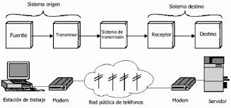
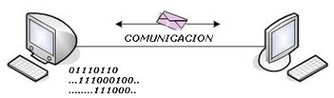

Introducción
Estos mecanismos garantizan la integridad de los datos. Stallings los considera esenciales.
Desarrollo
Incluyen paridad, CRC y códigos correctores. Proakis destaca su efectividad.


Conclusión
En conclusión, permiten comunicaciones confiables y seguras.